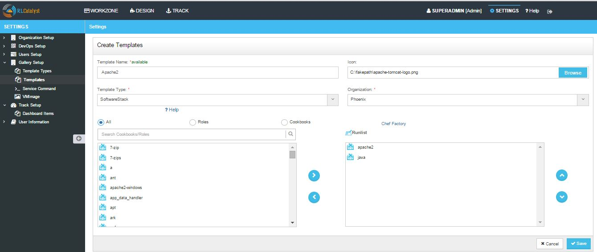
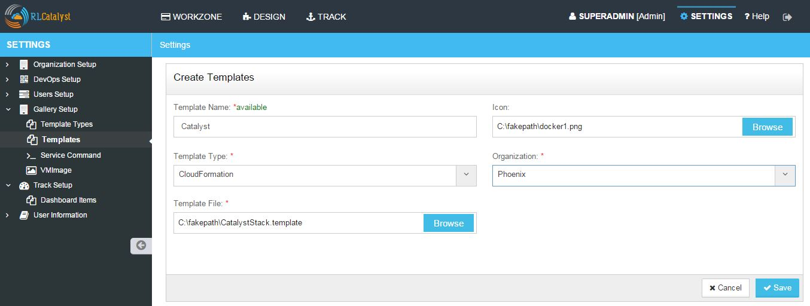
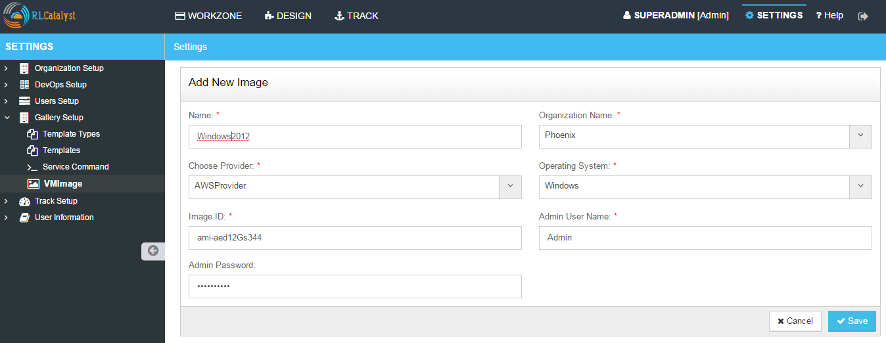
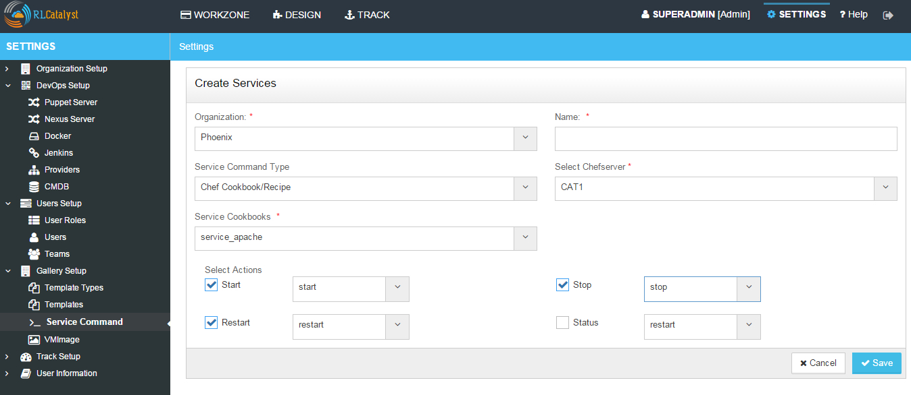
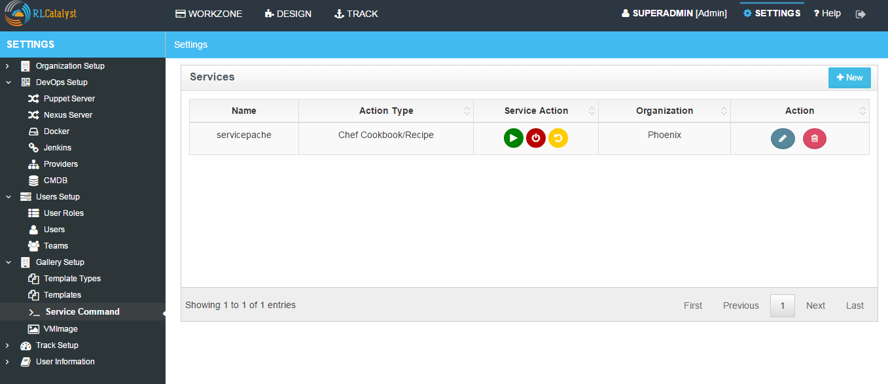
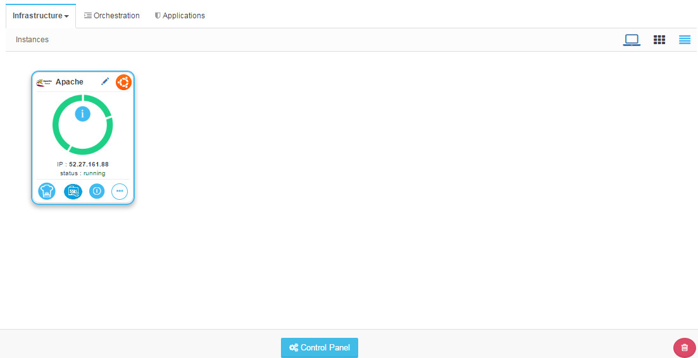
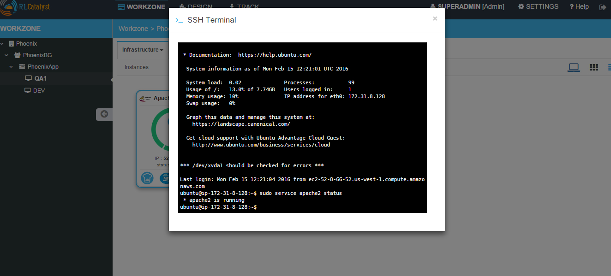
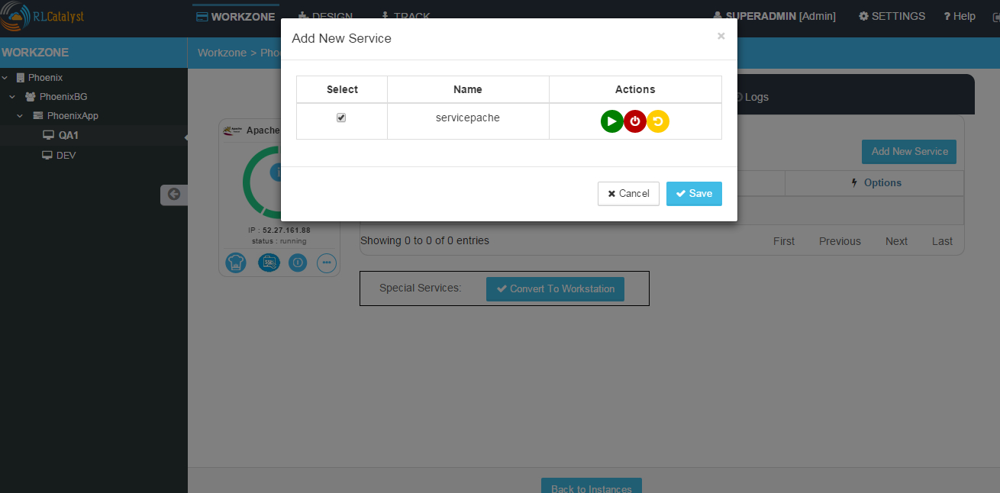

Templates¶
Templates will helps to deploy applications on existing infrasturcute without having need of launching new instances. Templates internally contains roles or cookbooks. With the help of templates also you can deploy different applications.
Adding a New Template For Software Stack Template Type

- From the main menu click on Settings
- Once you click on Settings, from the side menu click on Gallery Setup
- Click on Templates
- Click on New button provided
- Enter the template name in the Template Name field
- Upload an Icon by clicking on the Browse button.
- Choose the template type ‘Software Stack’ from the Template Type drop down list
- Choose the Organization from the Organizationdrop down list
- Select the Cookbooks from left frame and Click the arrow button to add to the Order Runlist. You can deselect the selected Cookbooks from the Order Runlist by clicking the arrow button to the Select Runlist box again
- You can customize the order of Order Runlist. First select the item and then use the up and down arrows provided to change the order of the Order Runlist.
- Now new template is added and available in the Templates list
Adding a New Template For Docker Template Type
From the main menu click on Settings
Once you click on Settings, from the side menu click on Gallery Setup
Click on Templates
Click on New button provided
Provide a template name in the Template Name field
Upload an Icon by clicking on the Browse button.
Choose the template type ‘Docker’ from the Template Type drop down list
Choose the Organization from the Organizationdrop down list
Choose the Docker repo
Add Docker Repo Path

Click on Save button
Now new template is added and available in the Templates list
Adding a New Template For Cloud Formation Template Type

- From the main menu click on Settings
- Once you click on Settings, from the side menu click on Gallery Setup
- Click on Templates
- Click on New button provided
- Enter the template name in the Template Name field
- Upload an Icon by clicking on the Browse button
- Choose the template type ‘CloudFormation’ from the Template Type drop down list
- Choose the Organization from the Organizationdrop down list
- Browse the Template File
- Click on Save button
- Now new template is added and available in the Templates list
Adding a New Template For ARMTemplate Type
- From the main menu click on Settings
- Once you click on Settings, from the side menu click on Gallery Setup
- Click on Templates
- Click on New button provided
- Enter the template name in the Template Name field
- Upload an Icon by clicking on the Browse button
- Choose the template type ‘ARMTemplate’ from the Template Type drop down list
- Choose the Organization from the Organizationdrop down list
- Browse the Template File
- Click on Save button
Hereby attaching a video which will demonstrate as in how to Create Templates in RLCatalyst:
VM Images¶
An image of a virtual machine is a copy of the VM, which may contain an OS, data files, data to be installed on multiple VMs and applications.It is usually tested for security, reliability and has the best tested conflagrations.
Adding a New VMImage

- From the main menu click on Settings
- Once you click on Settings, from the side menu click on Gallery Setup
- Click on VMImage
- Click on New button provided
- Enter the image name in the Name field
- Select the organization from the Organization drop down list
- Choose the provider from the Choose Provider drop down list
- Select the operating system type from the Operating System drop down list
- Provide the image identifier name in the Image ID field
- Provide the admin user name in the Admin User Name field
- Provide the admin password in the Admin Password field
- Click on Save button
- Now new VM Image is added and available in the VM Image list
Hereby attaching a video which will demonstrate as in how to Create VM Images in RLCatalyst:
- How to add Windows VMImage?
Before onboading Windows nodes into RLCatalyst, we need to ensure that WinRM is configured on the windows guest node, the two ports 5985 & 5986 are opened for communication between RLCatalyst and node.
The settings below must be added to your base server image or passed in using some sort of user-data mechanism provided by your cloud provider.
Steps (To be performed from a windows host):
- Use remote desktop to connect to the node (Start->Run->MSTC).
- Provide the IP Address / Host name of the node along with the username and password.
- Once connected to the node,
Open / Run powershell as an administrator
Execute the below commands (you could copy and paste all the commands together)
winrm quickconfig -q
winrm set winrm/config/winrs '@{MaxMemoryPerShellMB=“300”}’
winrm set winrm/config '@{MaxTimeoutms=“1800000”}’
winrm set winrm/config/service '@{AllowUnencrypted=“true”}’
winrm set winrm/config/service/auth '@{Basic=“true”}’
winrm set winrm/config/client/auth '@{Basic=“true”}’
netsh advfirewall firewall add rule name=”WinRM 5985” protocol=TCP dir=in
localport=5985 action=allow
netsh advfirewall firewall add rule name=”WinRM 5986” protocol=TCP dir=in
localport=5986 action=allow
net stop winrm
Set-Service WinRm -StartupType Automatic
net start winrm
Note: Press enter to execute the last command, if you have copy - pasted the above commands.
- To create an image from this node, follow the instructions given by the cloud service provider for image creation.
- Remember to create a local admin user before generating an image, as image generation wipes out existing administrator account, which will be manageable only from the server’s console and not remotely.
- Install all necessary updates before creating the image.
- Use the Windows sysprep utility to create the image.
- Details about using the sysprep utility can be found here (https://technet.microsoft.com/en-in/library/hh824938.aspx)
Service Command¶
Service Commands helps user to create a service associated with cookbooks which can run on the instance with the following actions Start, Stop and Restart.
Adding a new Service Command

- From the main menu click on Settings
- Once click on Settings, from the side menu click on Gallery Setup
- Click on Service Command
- Click on New button provided
- On Create Services page Select Organization, Enter Name, Choose Service Command Type as Chef Cookbook/Recipe , Select Chef Server, Service cookbooks as ‘service_apache’.
- Select the Actions.

- Click on Save button
- Now your Service Command is setup and listed in the Services Page
Go to Workzone and Launch or Import a Node

- Click on Chef Client run icon , add Apache2 cookbook to the runlist and click Update button. Wait until chefclient is success.


- When apache2 cookbook run successfully by default service will be running.Click on SSH icon and execute sudo service apache2 status command and verify apache2 is running.

- Close the SSH window
- Go to Instance control panel
- Go to Services tab and add the apache service and click on Save button
- Service is added to the Instance and Start,Stop and Restart buttons will be shown

- Click on Stop button (Red color) and wait until it succeeds
- Click on SSH icon
- Execute command sudo service apache2 status and verify apache2 is not running